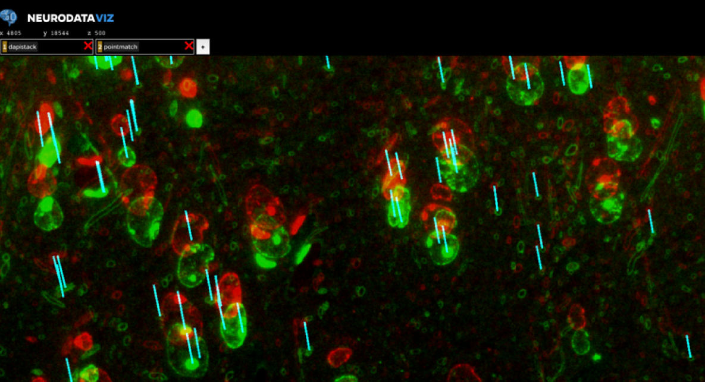

name:opening ### NeuroData:<br>A community-developed open-source computational ecosystem for big neuro data Joshua T. Vogelstein <img src="images/neurodata_blue.png" style="height:150px;float:right;"/> <br><br><br><br><br> <img src="images/funding/jhu_bme_blue.png" STYLE="HEIGHT:95px;"/> <img src="images/funding/KNDI.png" STYLE="HEIGHT:95px;"/> .foot[[jovo@jhu.edu](mailto:jovo@jhu.edu) | <http://neurodata.io/talks/> | [@neuro_data](https://twitter.com/neuro_data)] --- ### Origin: Hosting public data (2011-) <img src="images/website_datapage.png" style="width: 100%;"/> .footnote[<http://neurodata.io/data/>] --- ### ... but, it's hard. Don’t work alone! - We set out to revolutionize data management - And we have had mixed results... - ...but excited to have seeded a second generation --- ### New Role: A community-developed... Shift from "build your own" to "see what's available; supplement where necessary." - Collaborative: across organizations (JHU, Allen, Janelia, Google) - Cloud computing ecosystem - End-to-end: data management from microscope to publication - Spanning paradigms and modalities (EM, AT, MRI, Light Sheet) - Visualize data at all stages - Reproducible, extensible analysis ([Jupyter](http://jupyter.org/), [Gigantum](https://gigantum.com/)) --- ### What is our software stack? <img src="images/nd_stack.png" STYLE="height:450px;"/> .footnote[https://neurodata.io/help/overview/] --- ### Spatial Database: BossDB - Ported to AWS for scalability - Random access to arbitrary cutouts - Downsamples - Experimental metadata storage (e.g. JSON) - Authentication - Spatial queries on annotations <img src="images/bossDB.png" STYLE="width:100%;"/> .footnote[https://github.com/neurodata/boss] --- ### NDeX: data to/from cloud - images: uint8 and uint16 - annotations: uint64 - file formats: png, tiff, jpg, numpy, etc. - z-slice: flexible naming conventions - multi-channel - pip installable .footnote[https://github.com/neurodata/ndex] --- ### NeuroGlancer for Visualization .pull-left[ NeuroData Modifications include: - Boss support - Multi-color support - json backend - Ontology info ] .pull-right[ <img src="images/AT_rorb.png" style="width: 120%;"/> ] .footnote[https://github.com/neurodata/neuroglancer] --- ### NDReg for Light sheet registration <br> <img src="images/ndreg.png" style="width: 100%;"/> - LDDMM - Fully automatic (no landmarks) - Works on iDisco, Clarity, MRI, etc., - Applied to human, rat, mouse, zebrafish... .footnote[https://github.com/neurodata/ndreg] --- <img src="images/clarity_cells.png" style="position:absolute; left:0px; top:20px; width: 100%;"/> <!--  --> <!-- <img src="images/synaptomes_em_light.png" style="width:100%;"/> --> --- ### Current Data Hosting Strategy - 200+ teravoxels - 100+ public & private datasets - 30+ collaborators - All 3D+ data (no ephys, etc.) - Costs us cloud pricing - Considering moving to distributed model - Open/excited to collaborate .footnote[https://neurodata.io/data] --- ### Statistical Machine Learning - High-Dimensional (non-Euclidean) and Low-Sample Size Data - [LOL](https://github.com/neurodata/lol), [LumberJack](https://github.com/neurodata/lumberjack), [MGC](https://github.com/neurodata/mgc), [GrasPy](https://github.com/neurodata/graspy), [knor](https://github.com/neurodata/knorR)... .center[<img src="images/neurodata_tools.png" style="height: 380px"/>] .footnote[https://neurodata.io/tools/] --- ### Work In Progress - [FlyWheel](https://flywheel.io/) for data management - [CloudVolume](https://github.com/seung-lab/cloud-volume) (from Seung Lab) - Convolutional Dictionary Learning (with [J Sulam](https://sites.google.com/view/jsulam)) - Neuroglancer support for time-series data - Something with you? --- ### Acknowledgements <div class="container"> <img src="faces/cep.png"/> <div class="centered">Carey Priebe</div> </div> <div class="container"> <img src="faces/randal.jpg"/> <div class="centered">Randal Burns</div> </div> <div class="container"> <img src="faces/mim.jpg"/> <div class="centered">Michael Miller</div> </div> <div class="container"> <img src="faces/dtward.jpg"/> <div class="centered">Daniel Tward</div> </div> <div class="container"> <img src="faces/ebridge.jpg"/> <div class="centered">Eric Bridgeford</div> </div> <div class="container"> <img src="faces/vikram.jpg"/> <div class="centered">Vikram Chandrashekhar</div> </div> <div class="container"> <img src="faces/drishti.jpg"/> <div class="centered">Drishti Mannan</div> </div> <div class="container"> <img src="faces/jesse.jpg"/> <div class="centered">Jesse Patsolic</div> </div> <div class="container"> <img src="faces/falk_ben.jpg"/> <div class="centered">Benjamin Falk</div> </div> <div class="container"> <img src="faces/kwame.jpg"/> <div class="centered">Kwame Kutten</div> </div> <div class="container"> <img src="faces/perlman.jpg"/> <div class="centered">Eric Perlman</div> </div> <div class="container"> <img src="faces/loftus.jpg"/> <div class="centered">Alex Loftus</div> </div> <div class="container"> <img src="faces/bcaffo.jpg"/> <div class="centered">Brian Caffo</div> </div> <div class="container"> <img src="faces/minh.jpg"/> <div class="centered">Minh Tang</div> </div> <div class="container"> <img src="faces/avanti.jpg"/> <div class="centered">Avanti Athreya</div> </div> <div class="container"> <img src="faces/vince.jpg"/> <div class="centered">Vince Lyzinski</div> </div> <div class="container"> <img src="faces/dpmcsuss.jpg"/> <div class="centered">Daniel Sussman</div> </div> <div class="container"> <img src="faces/youngser.jpg"/> <div class="centered">Youngser Park</div> </div> <div class="container"> <img src="faces/cshen.jpg"/> <div class="centered">Cencheng Shen</div> </div> <div class="container"> <img src="faces/shangsi.jpg"/> <div class="centered">Shangsi Wang</div> </div> <div class="container"> <img src="faces/tyler.jpg"/> <div class="centered">Tyler Tomita</div> </div> <div class="container"> <img src="faces/james.jpg"/> <div class="centered">James Brown</div> </div> <div class="container"> <img src="faces/disa.jpg"/> <div class="centered">Disa Mhembere</div> </div> <div class="container"> <img src="faces/jeremias.png"/> <div class="centered">Jeremias Sulam</div> </div> <span style="font-size:200%; color:red;">♥, 🦁, 👪, 🌎, 🌌</span> <img src="images/funding/nsf_fpo.png" STYLE="HEIGHT:95px;"/> <img src="images/funding/nih_fpo.png" STYLE="HEIGHT:95px;"/> <img src="images/funding/darpa_fpo.png" STYLE=" HEIGHT:95px;"/> <img src="images/funding/iarpa_fpo.jpg" STYLE="HEIGHT:95px;"/> <img src="images/funding/KAVLI.jpg" STYLE="HEIGHT:95px;"/> <img src="images/funding/schmidt.jpg" STYLE="HEIGHT:95px;"/> --- class:center <img src="images/lion_l2m.JPG" style="position:absolute; top:0px; left:0px; height:100%;"/>